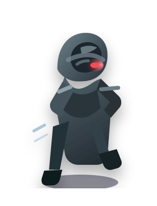
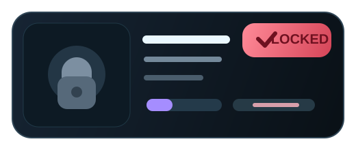
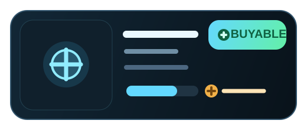
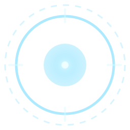
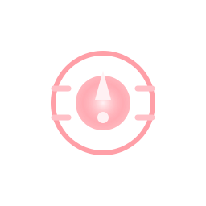

角色状态变体
服务于目标识别、扫描高亮、弱点开启、平民假线索与移动状态，不是简单换色，而是明显状态差分。
这一批不再以单张概念卡为主，而是更明确地为 Godot 当前项目补齐三条真实接入链路：角色状态变体、商店与武器库 UI 套件、扫描/命中/误伤的分帧反馈。整体仍然延续软 3D 卡通体块、暗色移动端狙击 HUD 与冷蓝辅助信息，但在视觉组织上更偏“系统状态、组件化、序列感”。
相较前两批，本页更强调切换关系与接入逻辑，而不是单张插画展示。你可以把这一批理解为“给程序直接接状态”和“给 UI 直接接底板”的资产集合。
服务于目标识别、扫描高亮、弱点开启、平民假线索与移动状态，不是简单换色，而是明显状态差分。
对应商店 tab、购买按钮、拥有/锁定/可购买、武器库列表卡、详情区与装备按钮，更适合直接挂到 Godot 控件上。
扫描脉冲、命中确认、误伤警告都按帧序列展示，方便直接做 HUD 动效原型或图集切片参考。
这一组直接对齐目标脚本语义：外星人保留红眼脉冲、肩线异常、伪装感；平民保持冷蓝灰、自然姿态，并允许出现短暂假线索。moving 版本则通过身体重心和迈步方向强化运动感。



这组素材对齐 ui_panel_shop.gd 的真实界面逻辑：货币栏、三个 tab、商品卡与购买按钮状态。重点不是装饰，而是让 owned / locked / buyable / enabled / disabled 一眼可分。





这一组对应 ui_panel_weapon_library.gd 的武器列表、皮肤列表、详情区与装备按钮。重点是装备态要足够明确，锁定态要足够收敛，详情区要像承载数据的装备页组件。


本页将三组分帧按序列展示。建议实际接入时先按照 1→5 顺序播放，验证信息传达是否成立，再决定是否进入图集、粒子或 shader 方案。





第三批建议直接拿去做小范围原型测试，而不是只停留在静态展示：切商店 tab、切武器库装备态、触发扫描、命中目标、误伤平民，都能快速判断这批素材是否真正服务业务。